Everything a student in one of my courses should read before starting, and keep open while working. How to approach the degree, which assumptions to drop, what a strong project has to demonstrate, and where to find worked examples, course assistants, and the textbooks behind the courses. For deeper essays on AI in software engineering and academia, see my blog posts.
Start Here
Read these early. They shape how you work through the degree and how everything you produce is judged.
Advice to CS Students in 2026
עצות לסטודנטים למדעי המחשב ב-2026
Six pieces of advice for navigating a degree in the AI era, each with a pattern to adopt, an anti-pattern to avoid, and the inner statement that gives the anti-pattern away. Available in English and Hebrew.
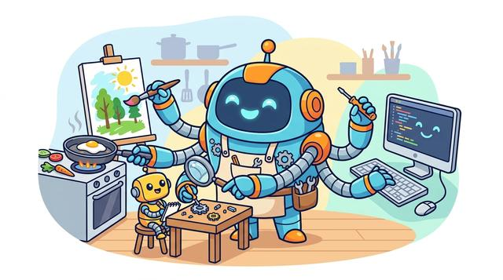
AI Does Far More Than Write Your Code
AI עושה הרבה יותר מלכתוב לכם קוד
Five ways to get real value from AI in your projects: invent new uses beyond generating code and slides, own every result, treat AI as a utility, and meet the higher bar it now sets. Each idea comes with a good and a bad example.
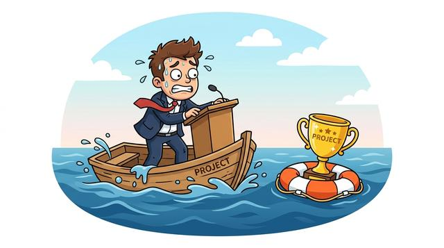
Don’t Let a Bad Talk Sink a Good Project
אל תיתנו למצגת גרועה להטביע פרויקט טוב
Ten tips for presenting technical work: build a narrative, justify only the choices that had real alternatives, keep slides clean, speak in precise technical language, rehearse on camera, and spend your time where the information is.
How to Write to Your Instructor
איך לכתוב למרצה שלכם
Five habits for a good message: try to answer it yourself first, include all the context, be brief and careful with wording, stay polite and professional, and expect links or an AI transcript in reply.
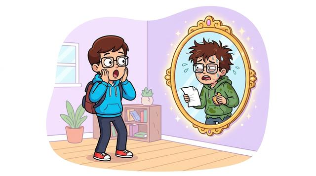
The Honest, Brutal Truth About Learning
האמת הכנה והברוטלית על למידה
Decide and shape your skillset, then face five hard truths: aim for skills over passive knowledge, practice relentlessly, do not trust the illusion of mastery school leaves you with, and use AI as your honest mirror.
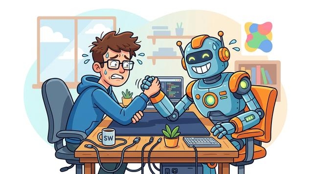
Will AI Make Software Engineers Obsolete?
האם AI ייתר מהנדסי תוכנה?
Common themes as of July 2026: the changing role of the engineer, where vibe coding reaches its limits, writing much less code, why code is still taught, and how uncertain the future really is.
About GenAI/LLM Courses
Orientation for students in the LLM, GenAI, and related AI courses: what these courses expect, the misconceptions to drop, and how to make the most of the intersection between your degree and AI.
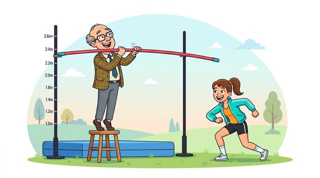
The One Kind of Innovation These Courses Require
סוג החדשנות היחיד שהקורסים האלה דורשים
The three questions behind any project (research, engineering, product) and the three kinds of innovation that answer them. Explains why these courses target scientific innovation, with product value as a floor.
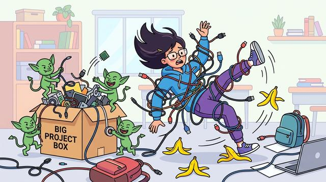
Ten Things Students Get Wrong About Projects
עשרה דברים שסטודנטים טועים בהם בפרויקטים
Ten beliefs that quietly limit what students get out of a project-based course, from mistaking a working demo for engineering skill to treating a course as content to consume. Each comes with the sentence that gives it away.
Medical Technology Students: Don’t Waste Your Cross-Domain Advantage
סטודנטים לרפואה דיגיטלית: אל תבזבזו את היתרון הבין-תחומי שלכם
How to turn the intersection of your degree, medicine and AI, into a standout LLM project: choose a meaningful problem, develop deep domain understanding, keep technological depth, and connect both worlds.
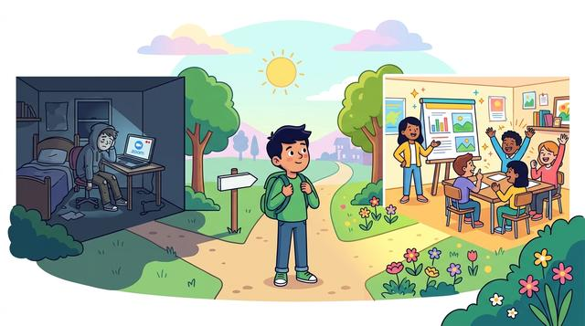
The Recordings Are Not the Course
ההקלטות הן לא הקורס
I record the sessions, but watching lectures is the least important part. The value is live interaction and three required project presentations, so the course is not a fit if you only plan to watch the recordings.
Project Standards for GenAI/LLM Courses
What a GenAI or LLM project has to demonstrate, and how to build the data behind it. Use these while the work is still taking shape.
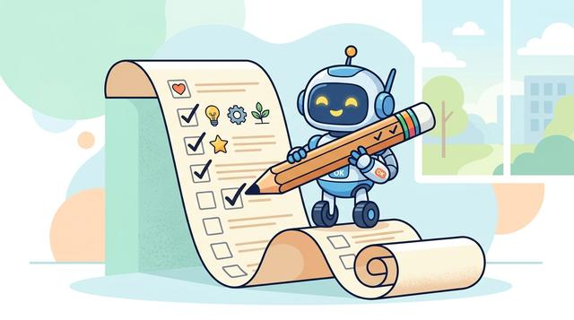
LLM/GenAI Project Requirements
דרישות פרויקט ב-LLM/GenAI
Twelve requirements a strong course project is expected to satisfy, grouped into four phases from framing the problem through to engineering rigor, each paired with the anti-patterns that most often weaken it.
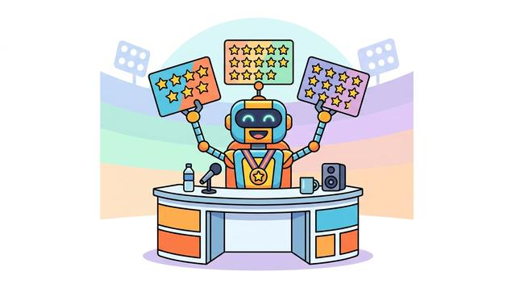
LLM/GenAI Project Assessment Criteria
קריטריונים להערכת פרויקט ב-LLM/GenAI
The five dimensions a project is judged on: domain understanding, depth of solution-space exploration, novelty and reuse, methodological rigor, and how clearly the work is presented and defended.
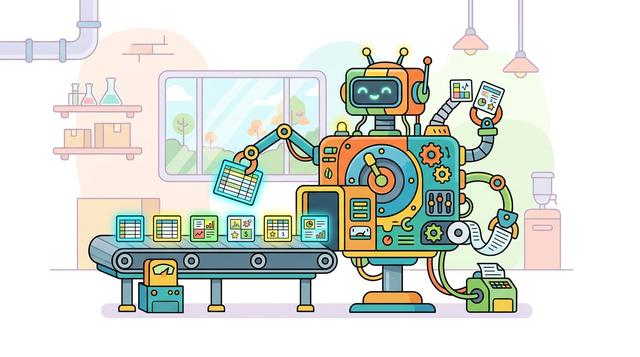
Synthetic Data Generation for LLM/GenAI Courses
יצירת נתונים סינתטיים לקורסי LLM/GenAI
A do-and-don't guide to generating synthetic data for LLM and GenAI projects: research real data first, control what you produce, prototype and debug small, inspect by hand, and compare strategies before scaling.
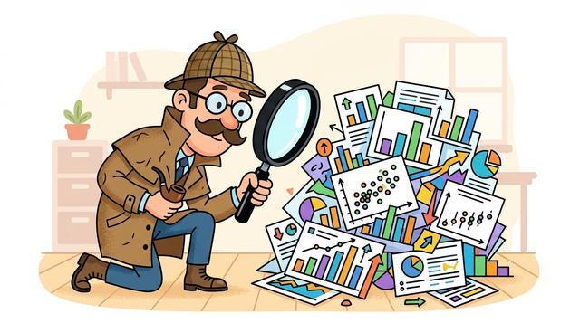
Practical EDA for Synthetic Datasets
EDA מעשי למאגרי נתונים סינתטיים
An eight-objective checklist to run before training: sanity, coverage, realism, variability, label quality, leakage, bias and balance, and difficulty, each with the practical EDA that verifies it.
Project Standards for Computer Vision Course
What a vision-robustness project has to demonstrate and how it is judged. Use these while the work is still taking shape.
Vision
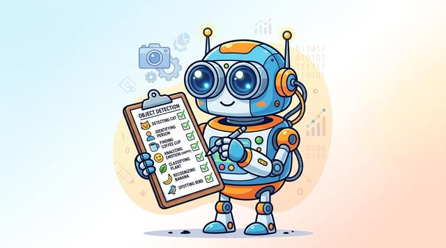
Project Requirements for Vision Course
דרישות פרויקט לקורס הראייה הממוחשבת
What the vision robustness project must do, stage by stage: dataset and task selection, clean baseline, distortion and degradation, restoration and fine-tuning, and documentation, each with its anti-patterns and a suggested weekly plan.
Vision
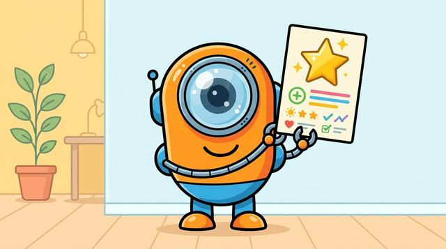
Project Assessment Criteria for Vision Course
קריטריונים להערכת פרויקט לקורס הראייה הממוחשבת
The five dimensions a vision robustness project is judged on: study design, measurement rigor, depth of exploration, recovery analysis, and visualization, each with the strong and weak signals graders look for.
GenAI/LLM Course Project Milestones
What each major milestone must demonstrate: not only that work was done, but that the team understands the problem, made justified technical decisions, evaluated the solution correctly, and can communicate the results clearly.
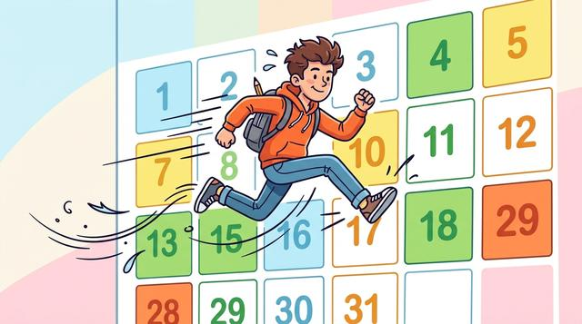
Suggested Weekly Plan for Project Execution
תוכנית שבועית מוצעת לביצוע הפרויקט
A week-by-week roadmap for a 13-week semester: which requirements to advance each week, with the proposal, midterm, and final at weeks 5, 8, and 13, plus weeks 14 and 15 to polish and submit the repository.
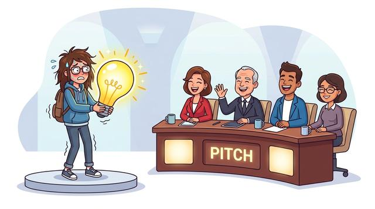
Project Proposal Presentation
מצגת הצעת הפרויקט
Six parts a strong proposal must cover: motivating use case, problem statement, novelty, models and methods, data specification, and an evaluation plan, each with its requirements and the anti-patterns to avoid.
Midterm Presentation
מצגת אמצע
Six parts that show the project has moved from planning to validated work: refinement, previous work, dataset and exploratory analysis, a baseline, initial results with error analysis, and a completion plan.
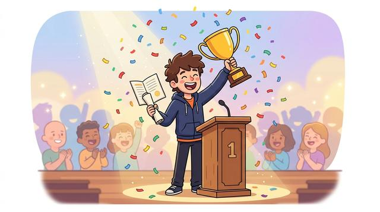
Final Presentation
מצגת הגמר
Seven parts that make the final technical argument: the refined definition, achievements and contributions, methodology, experimental results, interpretation, conclusions, and demonstrated effort.
GitHub Submission
הגשה ב-GitHub
Fifteen parts for a professional repository: naming, structure, a complete README, documented data and models, reproducible training and evaluation, code quality, and a final submission checklist.
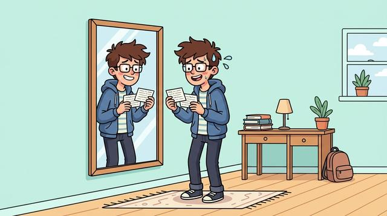
Preparing for Your In-Class Presentation
הכנה למצגת בכיתה
A six-step checklist for the days before you present: set up and register your repository, review the guides, self-evaluate with the course bot, rehearse and time your talk, and act on the instructor's feedback afterwards.
Working Resources
The teaching methodology, worked examples, course assistants, and the textbooks the courses are built on.
Methodology
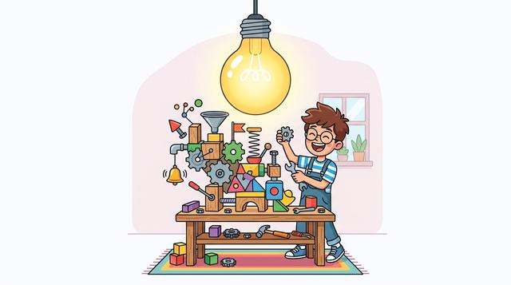
Innovation-First Learning
למידה מבוססת חדשנות
The teaching methodology behind the Hands-On AI Science courses, in ten principles that put building, state-of-the-art tools, and student innovation before formalization.
Examples
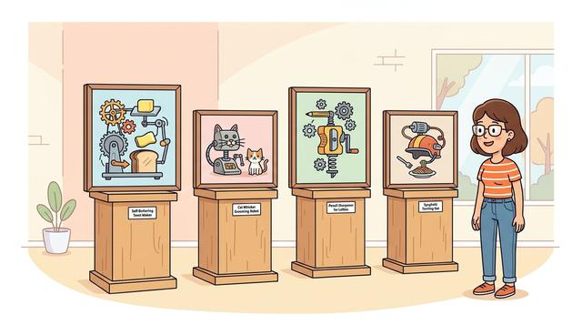
Past Projects
פרויקטים קודמים
Completed student course projects with their repositories and write-ups. The most reliable way to calibrate scope and quality before committing to your own proposal.
Assistants
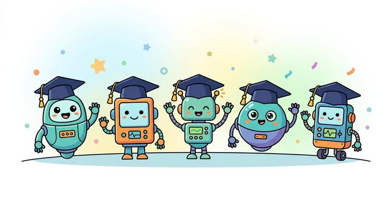
Course Bots
בוטים לקורסים
Course-specific AI assistants grounded in the syllabus and materials. Use them to close knowledge gaps the week they appear, and to challenge your own reasoning rather than to generate work.
Reference
Online Textbooks
ספרי לימוד מקוונים
The open textbooks behind the course series: Language AI, Vision AI, Scalable AI, Temporal AI, and Embodied AI. Readable online, with companion Android builds.